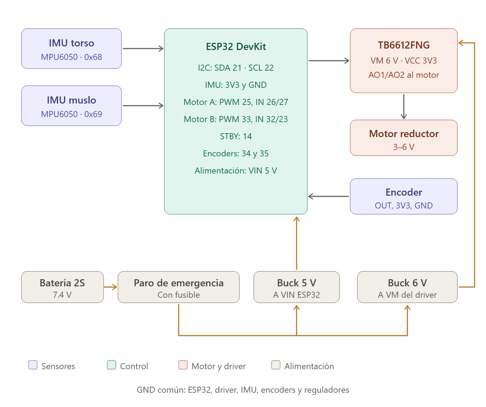
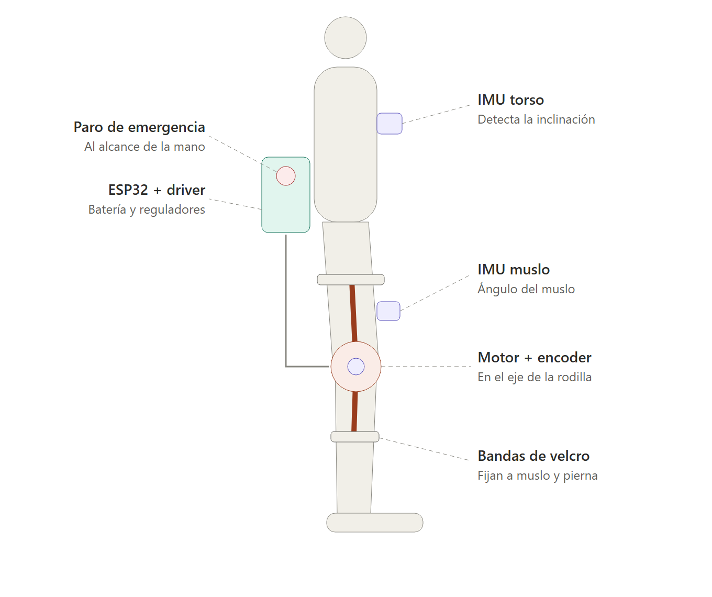

Exoasistente de rodilla: materiales y componentes
Prototipo de banco con ESP32 · motor reductor con TB6612FNG · 2 IMU · encoder
Subrayado y resaltado en amarillo = material que ya tienes. El resto es lo que falta por conseguir.
1. Electrónica y control
| Cant. | Material | Especificación | Para qué sirve | Estado |
|---|
| 1 | ESP32 DevKit | 30 pines, 3.3 V | Cerebro del sistema | Ya lo tengo |
| 1 | Driver TB6612FNG | 1.2 A continuos por canal | Controla el motor reductor | Ya lo tengo |
| 1–2 | Motor reductor TT con disco de encoder | 3–6 V | Mueve la rodilla en el prototipo | Ya lo tengo |
| 2 | IMU MPU6050 (módulo GY-521) | I2C, 3.3 V; uno en 0x68 y otro en 0x69 | Torso y muslo: detectan que la persona se levanta | Falta |
| 1–2 | Sensor óptico de ranura (LM393 / FC-03) | Salida digital, 3.3–5 V | Lee el disco del encoder | Falta |
| 1 | Protoboard o PCB perforada | 830 puntos o similar | Conexiones del prototipo | Falta |
| 2 | Servomotor SG90 (opcional) | 5 V, 180° | Pruebas iniciales de movimiento | Ya lo tengo |
2. Alimentación y seguridad
| Cant. | Material | Especificación | Para qué sirve | Estado |
|---|
| 2 | Celdas 18650 con portabaterías 2S | 3.7 V, 2000 mAh o más | Fuente de 7.4 V | Falta |
| 1 | Módulo BMS 2S | Protección contra sobredescarga y cortocircuito | Cuida las celdas | Falta |
| 1 | Cargador 2S con balanceo | Tipo IMAX B6 o similar | Cargar las baterías | Falta |
| 1 | Buck LM2596 o similar | Entrada 7.4 V, salida 5 V, 3 A | Alimenta la ESP32 por VIN | Falta |
| 1 | Buck LM2596 o similar | Salida 6 V, ajustada con multímetro | Alimenta VM del driver | Falta |
| 1 | Botón de paro de emergencia tipo hongo | Normalmente cerrado, 22 mm, 10 A | Corta toda la energía | Falta |
| 1 | Portafusible con fusible | 2–3 A | Protege contra cortocircuitos | Falta |
| 1 | Capacitor electrolítico | 470–1000 µF, 10 V | Estabiliza la alimentación del motor | Falta |
3. Cableado
| Cant. | Material | Especificación | Estado |
|---|
| 1 juego | Cables dupont | Macho-hembra y hembra-hembra | Ya lo tengo |
| 2 m | Cable de silicón 22 AWG | Rojo y negro, para potencia | Falta |
| 1 | Regleta de tornillos o conectores XT30 | Conexión de batería y motor | Falta |
| 1 | Termofit | Para aislar soldaduras | Falta |
4. Mecánica y sujeción
| Cant. | Material | Para qué sirve | Estado |
|---|
| 1 | Rodillera ajustable con bisagras laterales | Base del dispositivo en la rodilla | Falta |
| 2–3 | Bandas de velcro de 25–50 mm | Sujetar al muslo y a la pierna | Falta |
| 1 | Cinturón o faja | Soporte de la caja de electrónica | Falta |
| 1 | Caja de proyecto (ABS) | Aloja ESP32, driver, bucks y batería | Falta |
| 1 | Piezas impresas en 3D (PETG o PLA) | Soportes del motor, IMU y barras | Falta |
| 1 juego | Tornillos M3 con tuercas | Montaje | Falta |
5. Herramientas
| Material | Estado |
|---|
| Multímetro | Por confirmar |
| Soldador y estaño | Por confirmar |
| Cable USB para programar la ESP32 | Ya lo tengo |
6. Para la versión real del exoesqueleto (etapa posterior)
| Componente | Motivo |
|---|
| Motor BLDC de reducción baja (por ejemplo cuasi directo 9:1) | Da el torque necesario y se mueve fácil con la energía apagada |
| Driver del motor con límite de corriente por hardware | Evita que una falla del programa empuje con toda la fuerza |
| Encoder magnético (por ejemplo AS5600) | Ángulo de la rodilla con buena precisión |
| Watchdog externo y relé o MOSFET de corte | Corta la energía del motor en 50 a 100 ms si el programa se cuelga |
El TB6612FNG del prototipo no permite fijar un límite de corriente por hardware, y el motor TT no entrega el torque del diseño. El prototipo sirve para probar la lógica y la detección, no para ayudar a una persona.
Diagrama de conexiones

Cambio de pin respecto al código actual: BIN2 pasa del GPIO 21 al GPIO 23, porque el GPIO 21 es SDA del bus I2C de los IMU.
Diseño físico
